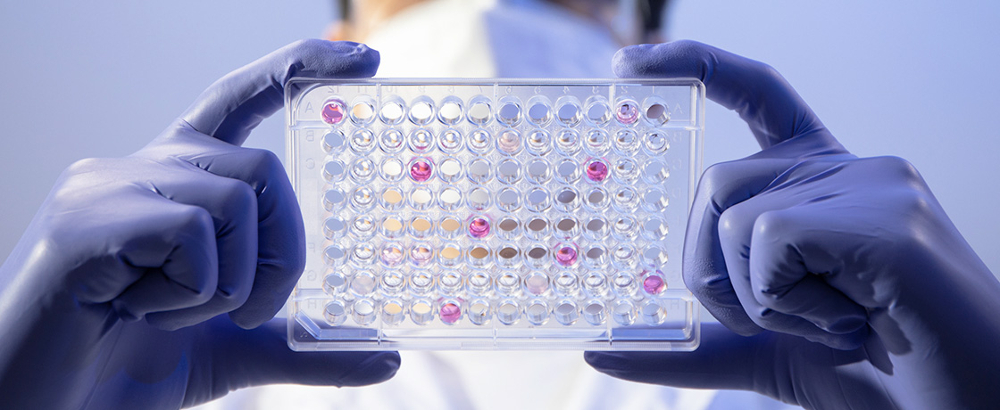
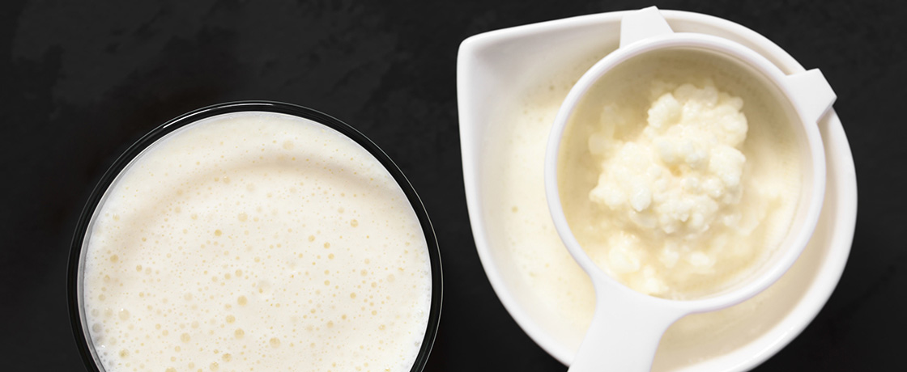
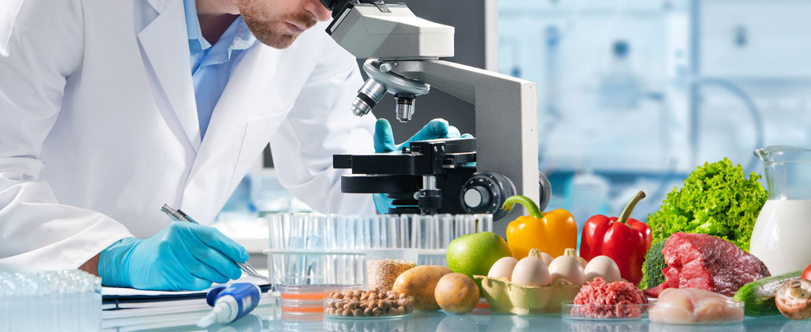

기초연구
바이오 연구, 신소재 발굴 등 개발의 기틀을 마련하고 신규 솔루션을 개척합니다.
-

바이오
천연물 유래의 기능성 소재를 탐색합니다. 롯데중앙연구소가 자체적으로 개발한 LRNC(Lotte R&D Natural product Collection)를 기반으로 기능성 소재 연구를 진행하고 있습니다. 적용 시험 및 기능성/안전성 평가, 인허가 및 식약처 대관 등을 거쳐 중장기적 사업 전략에 맞춘 고부가가치 개별인정형 기능성 식품 개발을 이끌어내고 있습니다.
-

발효
전통 발효식품으로부터 유용 미생물을 신규 분리하여 자체 균주 DB인 LRCC(Lotte R&D Culture Collection) 시스템을 구축하고, 연구용 및 그룹 식품사 사용 균주를 관리합니다. 또한 프로바이오틱스 및 포스트바이오틱스 소재를 개발하기 위해 기능성 검증을 수행하고 전임상 및 임상연구의 과학적 근거를 확보해 나가고 있습니다. 최근 Smart-Lab, 자동화 배양 시스템 등을 통해 데이터 기반 사업화를 가능케하고 있으며 고수율 발효 최적화 연구 및 대사산물 분리정제 기술 내재화를 통해 다양한 제품군에 적용할 수 있도록 제형별 안정성 연구 또한 수행하고 있습니다.
-

분석
식품의 품질과 관련된 다양한 미생물들을 스크리닝 하고 제어하기 위한 기술을 연구합니다. 또한 각종 최첨단 장비를 통해 표시 사항과 원료 및 제품에 대한 안전성을 검증하여 신뢰받는 제품을 만드는데 일조합니다. 더 나아가 RT-PCR, NGS와 같은 최신 기술을 이용해 마이크로바이옴, 대체 식품 등 미래 식품산업을 지원할 연구를 이어가고 있으며 미세 플라스틱, 나노입자 등 잠재적 위해요소에 대한 안전성을 확보하기 위한 기술을 선제적으로 개발하고 있습니다.
-
소재
향미 및 물성 소재, 기능성 소재, 대체 소재 등 다양한 분야에 걸쳐 신소재를 발굴합니다. 스크리닝, 유효성 검증 등을 진행하며 미래에 필요한 소재를 선제적으로 발굴·육성하고 있습니다. 단순히 소재 자체를 개발하는 것에 국한되지 않고 개발 단계를 고려, 제품 적용성과 안정성을 확보해 새로운 시장을 선도할 제품 개발 연구에 실질적 도움을 주고 있습니다. 적용된 소재라 할지라도 끊임없이 품질 안정화 작업을 수행할 뿐 아니라 소재에 대한 IP 및 인증 확보 업무까지 책임지고 있습니다.
-
응용
각종 기술을 바탕으로 한 연구 성과를 제품에 응용하여, 품질을 높이고 가치를 더하는 역할을 수행합니다. 전자코, 전자혀, 전자눈, 전자귀, TA(Texture Analyzer) 등 첨단 분석장비를 통해 맛, 향, 식감 등의 주관적 관능 특성을 객관화 하고, 뇌파 분석을 통해 감정을 객관화하는 연구를 진행하고 있습니다. 이로써 원료부터 완제품까지 각 개선 방향을 객관적으로 제시하며 소비자가 원하는 최상의 제품 개발을 지원합니다. 또한 제품의 영양학적 가치를 높이기 위해 영양 관리 기준을 수립하고 생애주기 및 제품 컨셉에 따른 영양 설계를 지원하는 등 자사 제품의 뉴트리션 아이덴티티 강화에도 힘쓰고 있습니다.